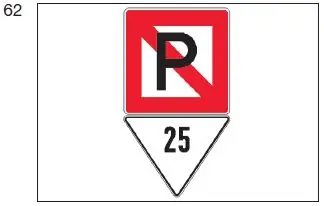

§ 3.33 Hinweis auf das Verbot des Stillliegens nebeneinander(Anlage 3: Bild 62)
Binnenschifffahrtsstraßen-Ordnung
1. Sofern das seitliche Stillliegen in der Nähe eines Fahrzeugs durch andere Vorschriften oder durch besondere Anforderungen der zuständigen Behörde verboten ist, muss dieses Fahrzeug an Deck in der Längsachse
eine quadratische Tafel, darunter ein dreieckiges Zusatzschild führen. |  |
Die quadratische Tafel ist auf beiden Seiten weiß mit rotem Rand und trägt einen roten Schrägstrich von links oben nach rechts unten und ein schwarzes „P“ im Mittelfeld. Das dreieckige Zusatzschild ist auf beiden Seiten weiß und zeigt in schwarzen Zahlen die Entfernung in Metern an, innerhalb derer das Stillliegen verboten ist.
2. Bei Nacht müssen die Tafeln so beleuchtet sein, dass sie an beiden Seiten des Fahrzeugs deutlich sichtbar sind.
3. Dieser Paragraf gilt nicht für die in § 3.21 genannten Fahrzeuge, Schubverbände oder gekuppelten Fahrzeuge.